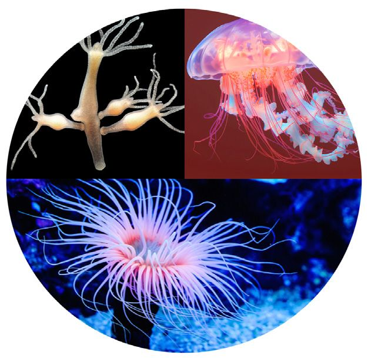
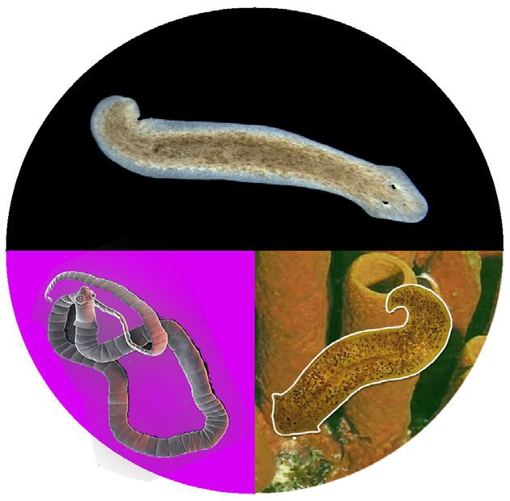
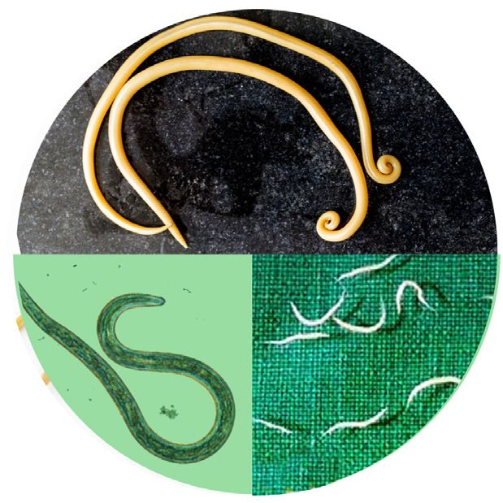
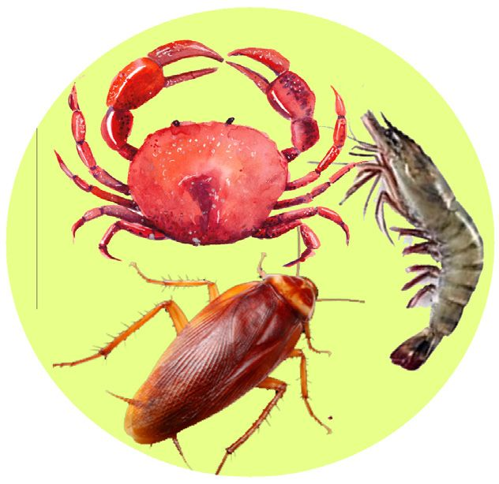
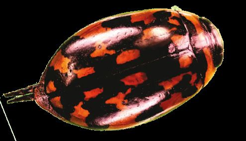
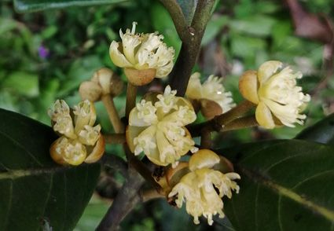
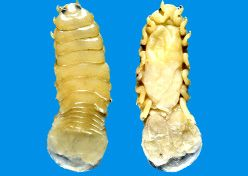
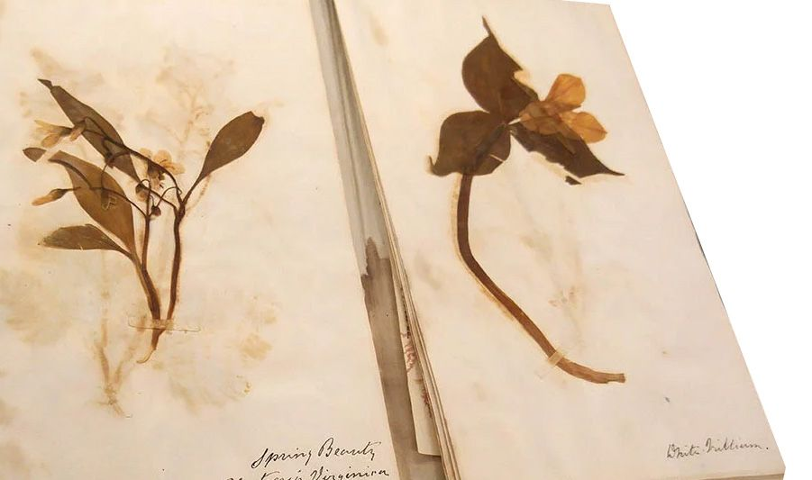

BIOLOGY - IX
y Three Domain classification y Classification of Animals y Classification of Plants 139
y Classification of newly Discovered Organisms y Evolutionary Tree y DNA Barcoding

BIOLOGY - IX
y Three Domain classification y Classification of Animals y Classification of Plants 139
y Classification of newly Discovered Organisms y Evolutionary Tree y DNA Barcoding

BIOLOGY - IX
Archaebacteria differ from other bacteria in their cell wall, cell membrane and protein synthesis. They can overcome any adverse situation.
Do Archaebacteria belong to the Kingdom Monera?
Haven't you noticed the doubt raised by the child watching the programme on KITE VICTERS channel? What will be your response? .................................................................................................... It is from such doubts that classification methods have been evolved and updated. Identifying organisms and understanding their characteristics lead to additions and updations in classification methods. The five-kingdom classification system has also been subjected to updations. Analyse the description and illustration 6.1 based on the indicators and prepare a note.
140


BIOLOGY - IX
Three Domain Classification
Bacteria
Archaea
ia
e A
ni
m
al
ta an
Fu
Pl
ng
i
ta is ot Pr
rc A
Ba
ct
ha
er
ia
ea
A scientist named Carl Woese (1928- 2012) tried to study more about the organisms that belonged to Kingdom Monera. Through scientific observation, he realised that these microorganisms are distinct from bacteria. He also noted the structural differences between these organisms and their diverse Carl Woese adaptations for surviving the environmental changes. He identified that the genetic materials of such organisms were different from that of bacteria. Based on this, he classified Kingdom Monera into two, namely Bacteria and Archaea and further included another classification level called Domain above the Kingdom. Organisms belonging to all six kingdoms were organised into three domains. These were named as Domain Bacteria, Domain Archaea and Domain Eukarya.
Eukarya
Illustration 6.1 : Six kingdom classification 141
Kingdom
Domain

BIOLOGY - IX
• Contribution of Carl Wouse in Taxonomy • Relevance of dividing the Kingdom Monera into different kingdoms such as Archaea and Bacteria • Domains and their corresponding kingdoms. Now you understood how organisms are classified into different kingdoms. Complete the illustration 6.2 by including the peculiarities of kingdoms, citing suitable examples. Bacteria
Archaea
y Prokaryotes
y Prokaryotes
y The cell wall consists of peptidoglycan.
y The cell wall lacks peptidoglycan.
y Found everywhere like soil, water, and inside other organisms. e.g. Rhizobium, Vibrio cholerae
y Found in the extreme environment like hot springs, saline areas, etc. e.g. Thermococcus, Halobacterium
Animalia
Protista
y ...................................................... y ...................................................... e.g.: ...................................................... ......................................................
y ...................................................... y ...................................................... e.g.: ...................................................... ......................................................
Kingdom
Plantae
Fungi
y ...................................................... y ...................................................... e.g.: ...................................................... ......................................................
y ...................................................... y ...................................................... e.g.: ...................................................... ......................................................
Illustration 6.2 : Kingdoms and their peculiarities Shall we learn more about the diverse animal world and the plant world?
142




BIOLOGY - IX
Classification of Animals
Animals are grouped into different phyla based on their structure, body cavities, germ layers and symmetry. Within the classification hierarchy of certain animals, there are additional subdivisions between phylum and class, such as subphylum, division and superclass. After analysing illustrations 6.3 (a, b, c), understand how organisms in the animal kingdom are classified into different phyla, and complete the worksheet 6.1.
Phyla included in the Kingdom Animalia Porifera
Cnideria (Coelenterata)
Aquatic organisms with minute pores throughout the body
Aquatic organisms with tentacles bearing cnidoblast
e.g. Sponges
e.g . Hydra, Jelly fish, Sea anemone
Platyhelminthes
Nematoda
Small, soft and flat bodied worms
Long and round bodied worms
e.g. Planaria, Tape worm, Fluke
e.g. Round worm, Hook worm, Pin worm Illustration 6.3 (a) : Classification of animals 143



BIOLOGY - IX
Annelida
Arthropoda
Segmented-bodied organisms
Organisms with jointed legs and exoskeleton
e.g. Earth worm, Leech
e.g. Prawn, Cockroach, Crab
Mollusca
Echinodermata
Soft body, in most organisms a shell made of calcium carbonate covers the body. e.g. Snail, Octopus, Clam
Marine organisms with spiny body. e.g. Sea Urchin, Star Fish.
Illustration 6.3 (b) : Classification of animals 144


BIOLOGY - IX
Chordata
Notochord and Vertebral column
Organisms with rod shaped notochord or vertebral column e.g. Man, Fish, Frog Illustration 6.3 (c) : Classification of animals
Peculiarity
The notochord is a rod-like structure that appears in the place of the vertebral column during the early stages of growth, or throughout the life of animals in the phylum Chordata. Phylum Chordata derived its name due to the presence of the notochord. Urochordata, Cephalochordata and Vertebrata are the three sub phyla of Phylum Chordata. Notochord is seen in different forms in these organisms. In the sub phylum Urochordata, the notochord is restricted only to the tail region during the larval stage. However, in organisms included in the subphylum Cephalochordata, the notochord which extends as a rodlike structure from head to tail remains till the end of life. Whereas in subphylum Vertebrata, the notochord is present only during the embryonic stage, and as the embryo grows, it transforms into the vertebral column.
Phylum
Marine organisms with a spiny body
Example Sea Urchin, Star Fish
Nematoda Aquatic organisms with minute pores throughout their bodies
Sponges
Aquatic organisms with tentacles bearing cnidoblast Snail, Octopus Segmented bodied organisms Arthropoda Tape worm, Planaria Chordata Worksheet 6.1 145

BIOLOGY - IX
Phylum Chordata consists of organisms having notochord. Vertebrates are included in subphylum vertebrata of Phylum Chordata. Analyse the table 6.2 and gather additional information to understand how the organisms included in this list are further classified. Based on this, complete the table by including the organisms given in the box. Super class Pisces (having fins)
Class Chondrichthyes (Cartilaginous fishes) Osteichthyes (Bony fishes)
Peculiarities Scales are there in the body. Heart is two-chambered. Habitat ------------Means of Locomotion ----------Respiratory organs -----------
Amphibia (Amphibians)
Complete the life cycle in land and water, Moist and slimy skin, Lay eggs, Respiratory organs----Number of heart chambers -------
Reptilia (Reptiles)
Reptiles, dry skin, scales are there in the body, nails on digits (except in snakes) Respiratory organs----Number of heart chambers ------Reproductive method --------
Aves (Birds)
Body is covered with feathers, wings, claws on digits, Respiratory organs----Number of heart chambers ------Reproductive method --------
Mammalia (Mammals)
Body is covered with hair/fur, nails on fingers and toes, lactate, respiratory organs----Number of heart chambers ------Reproductive method --------
Tetrapoda (Having limbs)
Examples
Table 6.2 : Classification of sub phylum vertebrata
e Find out th f number o heart of chambers and crocodile alligator.
Frog, Rohu, Cat, Crocodile, Mackerel, Tree frog, Kiwi, Viper, Crow, Wall lizard, Garden lizard, Domestic Fowl, Cow, Pigeon, Tiger, Pearl spot, Shark, Dolphin, Salamander, Alligator, Snake, Elephant, Penguin Observe the other animals in your surroundings and group them into different classes. Now, create a digital presentation and present it in the class. 146


BIOLOGY - IX
Classification of Plants
You have understood the classification of animals into different groups. Kingdom Plantae is classified into different divisions on the basis of the similarities and differences in the body structure, vascular system and seed formation. Analyse the illustration 6.4 and prepare a note on the basis of indicators.
Divisions of Kingdom Plantae
Algae
Bryophyta
Pteridophyta
Most of them are aquatic. Mostly found on moist Mainly terrestrial plants. The body called as Thallus is surfaces. There are parts Root, stem and leaf have not differentiated into root, like root, stem and leaf. been formed. Reproduction stem and leaves as in higher Reproduction is done through is mainly through spores. plants. Both sexual and gametes and spores. Vascular tissues with asexual modes of Vascular tissues are absent. simple structure are seen. reproduction are seen. Vascular tissues are absent. e.g. Spirogyra, Sargassum
e.g. Riccia, Funaria
e.g. Lycopodium, Pteris
Angiosperms
Gymnosperms
Reproductive structures known as cones Reproductive parts are present in the are present. Even though seeds are formed, flowers. Fruits are seen covering the seeds. they are not embedded fruits. Complex Complex vascular tissues are seen. Xylem vascular tissues are seen, but xylem vessels and tracheids are present. vessels are absent. e.g. Cycas, Pine
e.g. Hibiscus, Mango tree, Coconut tree.
Illustration 6.4 : Classification of plants 147





BIOLOGY - IX
• Different divisions of Kingdom Plantae • Peculiarities in reproduction • Presence of vascular tissues
Difference in the classification Earlier, the Kingdom Plantae was classified into five divisions: Thallophyta, Bryophyta, Pteridophyta, Gymnosperms and Angiosperms. Algae and fungi were included in the Thallophyta. However, in subsequent classification systems, fungi were placed in a separate kingdom based on their unique characteristics. In many modern classification systems, some algae are included in the Kingdom Protista. Algae, which share many characteristics with plants, are still classified within the Kingdom Plantae. You have understood how plants are classified. Find out more plants that belong to each level and tabulate them. With the help of your teacher, prepare a herbarium of locally available plants. How will the plants included in the herbarium be scientifically classified and given names? Pay attention to the following extract from a science article.
The fame within the name
Something interesting can also be found in the scientific names of organisms.
Sandracottus vijayakumari
Litsea vagamonica
Brucethoa ISRO
A new species of beetle discovered in Nelliampathi
A new plant in the category of Kuttippanal from Vagamon
A kind of parasite found in fishes at Kollam coastal area
148

New organisms are being discovered like this. There are continuous efforts to classify them as well. How can we understand that a newly discovered organism is not currently classified? Write down your assumption.
BIOLOGY - IX
.................................................................................................... Analyse the description and check the validity of your assumption.
If a new organism is discovered... The characteristics of an organism are examined and compared with that of other known species and its classification is done. This includes morphological features, peculiarities of body structure and biomolecules. Comparative analysis of the organism's DNA with that of other species is also crucial. If there are significant genetic differences, it can be confirmed that this organism belongs to a new species. This discovery is then published in an international science journal and made available to the scientific community and the general public.
None of these classification methods include virus!
You have noticed the doubt of the child. What would be your response to this doubt? Analyse the characteristics of viruses based on the given indicators and prepare a note. 149


BIOLOGY - IX
Capsid Genetic material
Fig. 6.1 : Virus
Viruses and classification Viruses could not be included in any category of the six-kingdom classification system. However, considering their structure, mode of division, genes, etc., virologists and taxonomists have classified viruses into families, genus and species which are meant only for them. This classification of viruses helps scientists to study their nature, evolution, development, etc. and develop methods to combat viral diseases.
Viruses have a simple structure devoid of cytoplasm, cell organelles and nucleus. Genetic materials (DNA or RNA) are found inside an outer protein coat called a capsid. They infect a wide variety of organisms, including plants, animals, bacteria and archaea. Organisms having the ability to reproduce, respond to the environment, to grow, and do metabolic activities are included in the process of classification. Viruses cannot multiply without the help of a host cell. They are inactive outside any living cell. Due to these unique characteristics, they are not included in any category of the current six-kingdom classification. • Structure of the virus • Difference between Viruses and other Cells • Reasons for not including Viruses in the classification. Isn't it clear that none of the classification methods are complete? Efforts to develop more scientific classification methods are going on. 150

Analyse the given description about modern techniques in classification and gain an understanding about it.
BIOLOGY - IX
Evolutionary Tree The biodiversity of earth was developed as a result of the evolutionary processes. The evolutionary relationship between different organisms can be illustrated as branches of a tree. This is called an Evolutionary Tree. Here, the place where branches develop indicates ancestral organisms. The classification becomes more accurate by illustrating evolutionary relationships. It helps in developing an indepth understanding about biodiversity. In short, the Evolutionary Tree plays a crucial role in the studies of classification. How is the Evolutionary Tree illustrated? Observe the table 6.3 showing four peculiarities of organisms such as Lung Fish, Wall Lizard, Dog and Man. Analyse them on the basis of the indicators. Organisms
Peculiarities Skull
Forelimbs
Hair/Fur
Lactation
Lung Fish
Yes
No
No
No
Wall Lizard
Yes
Yes
No
No
Dog
Yes
Yes
Yes
Yes
Man
Yes
Yes
Yes
Yes
Table 6.3 Organisms and Peculiarities
• Features considered • Organisms having all these features. Analyse the illustration 6.5 and record your inferences about how the Evolutionary Tree of these organisms is constructed based on the characteristics given in the table. 151


BIOLOGY - IX
Lung Fish Skull
Wall Lizard Fore limbs Dog
Hair/Fur, Lactation
Man
Illustration 6.5 : Evolutionary Tree You have understood how to prepare an Evolutionary Tree based on similarities and differences between organisms. To know more about the Evolutionary Tree and the relation between the organisms, visit the website https://www.onezoom.org/. The most modern technology organisms is DNA barcoding.
DNA Barcoding
152
for
classifying

Analyse the given description on the basis of indicators, collect more information and gain knowledge about this.
DNA bar coding is the technology of classifying organisms by comparing the special molecular sequences (codes) of DNA. It is the most scientific technology for identifying the species in modern biological researches. Unlike the traditional methods, it helps to recognize the species at molecular level. This is made possible by the creation and sharing of DNA barcodes by the researchers and laboratories all over the world.
• DNA bar coding • Importance of Barcoding Classification has an impact on all areas such as characteristics of organisms, ecological interactions, biological evolution, biodiversity conservation, and biotechnology. There are millions of species on earth that are yet to be identified. Some became extinct even before they had a name of their own. Certain others are facing the threat of extinction. It is the responsibility of mankind to recognise all these species and protect them as they stand at the highest level of the taxonomical hierarchy. Only through this can man also ensure his survival.
153
BIOLOGY - IX

BIOLOGY - IX
Let us Assess 1. Draw an Evolutionary Tree of the organisms by analysing the table given below. Peculiarities Vertebral column
Shark
Frog
Kangaroo
Man
Yes
Yes
Yes
Yes
Two pairs of limbs
-
Yes
Yes
Yes
Mammary glands
-
-
Yes
Yes
Placenta
-
-
-
Yes
2. Different animals and the phyla to which they belong are given below. Make pairs as shown in the model. Model : Man – Chordata Man, Sponges, Snail, Hydra, Round Worm, Starfish, Earthworm, Cockroach, Planaria
Porifera, Cnidaria, Platyhelminthes, Nematoda, Annelida, Arthropoda, Mollusca, Echinodermata, Chordata
3. How is the DNA barcoding technology used for identifying different species? 4. Plants without conducting tissues are included in a single group in Kingdom Plantae. Comment. 5. The peculiarities of certain divisions of Kingdom Plantae are given below. Identify and name the divisions by analysing them. a) Vascular tissues are present, Reproduction through spores. b) No fruits to cover the seeds. Reproduction through seeds. c) No vascular tissues. Reproduction with the help of gametes and spores. 154
BIOLOGY - IX
6. Make corrections if any, in the underlined portions of the given statements. a) Species is the taxonomic level placed above the Kingdom. b) Vertebrates are included in sub phylum vertebrata of Phylum Chordata. c) Mammalia is the class containing organisms that complete their life cycle on land and in water. 7. Analyse the statement and reason, find the correct answer and write down. Statement : Viruses are not included in any category of the current six-kingdom classification. Reason
: Viruses are inactive outside any living cell.
a) Statement correct, reason false. b) Statement and reason are correct. c) Statement false, reason correct. d) Statement and reason are false. 8. Identify the relation and fill in the blanks. a) Jelly fish : Cnidaria; Hook worm : ----------------b) Crab : Arthropoda; Octopus
: -----------------
9. Which of the following category includes Mango tree and Coconut tree? a) Bryophyta b) Pteridophyta c) Gymnosperms d) Angiosperms
155

BIOLOGY - IX
Extended Activities 1. Prepare a Local Biodiversity Register including the common name and scientific name of various organisms in your locality and submit it to the local self government institution in your area. 2. Set up a Seed Library by collecting available seeds from your locality. 3. Collect data on the organisms recently discovered in Kerala, prepare a wall magazine and exhibit it in your class. 4. Observe the organisms that can be seen in your school campus and surroundings and classify them.
156
BIOLOGY - IX
NOTES ------------------------------------------------------------------------------------------------------------------------------------------------------------------------------------------------------------------------------------------------------------------------------------------------------------------------------------------------------------------------------------------------------------------------------------------------------------------------------------------------------------------------------------------------------------------------------------------------------------------------------------------------------------------------------------------------------------------------------------------------------------------------------------------------------------------------------------------------------------------------------------------------------------------------------------------------------------------------------------------------------------------------------------------------------------------------------------------------------------------------------------------------------------------------------------------------------------------------------------------------------------------------------------------------------------------------------------------------------------------------------------------------------------------------------------------------------------------------------------------------------------------------------------------------------------------------------------------------------------------------------------------------------------------------------------------------------------------------------------------------------------------------------------------------------------------------------------------------------------------------------------------------------------------------------------------------------------------------------------------------------------------------------------------------------------------------------------------------------------------------------------------------------------------------------------------------------------------------------------------------------------------------------------------------------------------------------------------------------------------------------------------------------------------------------------------------------------------------------------------------------------------------------------------------------------------------------------------------------------------------------------------------------------------------------------------------------------------------------------------------------------------------------------------------------------------------------------------------------------------------------------------------------------------------------------------------------------------------------------------------------------------------------------------------------------------------------------------------------------------------------------------------------------------------------------------------------------------------------------------------------------------------------------------------------------------------------------------------------------------------------------------------------------------------------------------------157
BIOLOGY - IX
NOTES ------------------------------------------------------------------------------------------------------------------------------------------------------------------------------------------------------------------------------------------------------------------------------------------------------------------------------------------------------------------------------------------------------------------------------------------------------------------------------------------------------------------------------------------------------------------------------------------------------------------------------------------------------------------------------------------------------------------------------------------------------------------------------------------------------------------------------------------------------------------------------------------------------------------------------------------------------------------------------------------------------------------------------------------------------------------------------------------------------------------------------------------------------------------------------------------------------------------------------------------------------------------------------------------------------------------------------------------------------------------------------------------------------------------------------------------------------------------------------------------------------------------------------------------------------------------------------------------------------------------------------------------------------------------------------------------------------------------------------------------------------------------------------------------------------------------------------------------------------------------------------------------------------------------------------------------------------------------------------------------------------------------------------------------------------------------------------------------------------------------------------------------------------------------------------------------------------------------------------------------------------------------------------------------------------------------------------------------------------------------------------------------------------------------------------------------------------------------------------------------------------------------------------------------------------------------------------------------------------------------------------------------------------------------------------------------------------------------------------------------------------------------------------------------------------------------------------------------------------------------------------------------------------------------------------------------------------------------------------------------------------------------------------------------------------------------------------------------------------------------------------------------------------------------------------------------------------------------------------------------------------------------------------------------------------------------------------------------------------------------------------------------------------------------------------------------------158